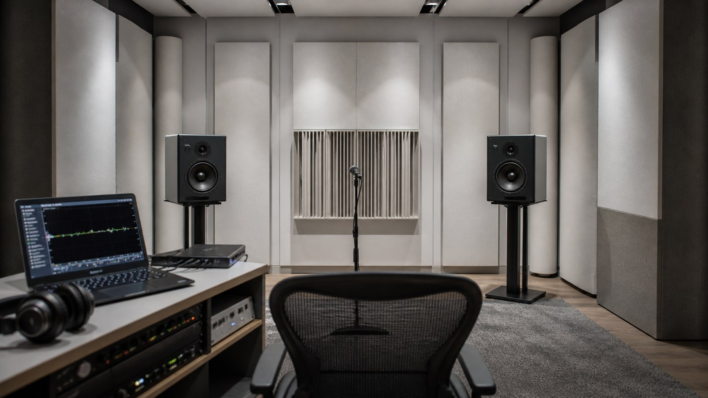

十二流派診断

真音流

家元：玄聴斎（げんちょうさい）
"真音流とは、作り手の意図に最も近い音を己の趣味で歪めず受け取ることを旨とする、再現の道です。"
真音流の言葉
真音流の根本は「忠実再生」の一言に尽きる。録音に込められた制作者の意図を、いかなる加色も減色もせず届けることが、この流派の究極の目標である。測定値、盲聴、フラットな周波数特性——これらはすべて、その目標を検証するための道具に過ぎない。

真音流の修行者は、機材選びにおいても「音の個性」より「透明度」を重んじる。色付けの少ない再生系を構築し、その上で初めて楽曲の本質と対話する。飾らぬ鏡のごとき装置を磨き上げることに、この道の美学がある。
向く環境は、モニタースピーカー、リファレンスヘッドホン、測定マイクと補正ソフトを使った部屋の調整など。データと耳の両方を武器に、録音の真実へ近づく者の流派である。